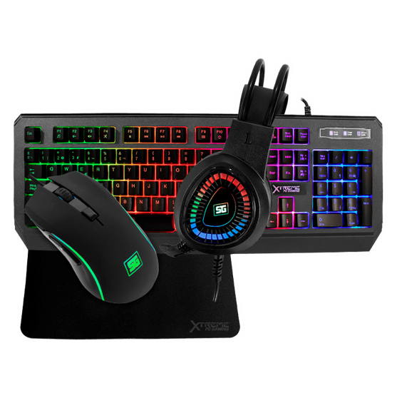
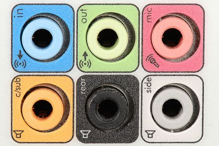

Unidad III
Selección de computadoras para ensamble de equipo de computo
Seleccionar una computadora no es fácil. Puede ser un proceso confuso, por ello se debe contar con la información necesaria para tomar una decisión correcta, filtrar la búsqueda para descartar opciones de poco interés. Ciertos parámetros, como el rango de precios y para qué y dónde tienes pensado usar el dispositivo, ayudan a definir el equipo perfecto.
3.1.- Chipset
Un chipset es un conjunto de componentes electrónicos que gestionan el flujo de datos entre el procesador, la memoria, y los periféricos, por lo que desempeñan un papel fundamental en el rendimiento y la funcionalidad de un ordenador o dispositivo móvil, ya que determinan la velocidad y eficacia de la transferencia de datos entre componentes, así como la calidad de la salida de gráficos y audio. Hay dos tipos principales de chipset.
- Chipset de la CPU: se encuentra en el propio procesador y se encarga de la comunicación entre el procesador y la memoria.
- Chipset de placa madre: se encuentra en la placa madre y se encarga de la comunicación entre el procesador, la memoria y los periféricos.
3.1.1- Unidad central De procesamiento (CPU)
El CPU es el componente fundamental de cualquier computadora. Es responsable de procesar y ejecutar instrucciones, así como de controlar y coordinar el flujo de datos en la computadora, los criterios que determinan su finalidad son:
- Núcleos: Realizan lectura y ejecución de instrucciones, aunque son instrucciones ordinarias, son paralelizadas en la ejecución. Los multiprocesadores homogéneos tienen núcleos idénticos, y los heterogéneos tienen núcleos distintos. Según el diseño, pueden compartir caché y memoria y por lo tanto ser mas rapidos.
- Caché: Considerando que la velocidad de los procesadores aumenta más rápido que la velocidad de la memoria, la optimización del procesamiento mediante caché evita el cuello de botella. El caché disminuye la latencia y mejora el rendimiento del procesador.
- Frecuencia: Es la velocidad a la cual el generador de reloj del procesador genera pulsos, los cuales son indicadores de la rapidez del procesador y sus operaciones. Aunque mayor frecuencia implica mayor velocidad de procesamiento, se deben tomar en cuenta la optimización de estos, ya sea por segmentación de instrucciones como por núcleos múltiples.
- Hilos: Especifica el número de procesos independientes que un CPU permite, y algunas tecnologías permiten que un solo núcleo pueda tener 2 o más hilos.
- Overclocking: Es la práctica de sobrecargar la frecuencia del procesador (mediante mayores voltajes) a tasas mayores a las certificadas por el manufacturero para mayor rendimiento.
- Compatibilidad de zócalo: Es el conector que enlaza el CPU a la tarjeta madre. Para que el CPU sea compatible con la tarjeta madre, debe ser compatible con el zócalo. Entre diferentes zócalos, mayor cantidad de pines aumentará la velocidad de transmisión de las señales.
- Compatibilidad de BIOS: La BIOS es firmware, código de bajo nivel que inicializa el hardware y el SO. Aunque un microprocesador en específico sea compatible con la tarjeta madre en cuestión, esta necesita tener al menos la misma versión de la BIOS con la que el microprocesador es compatible.
3.1.2- Controlador de bus
Un controlador de bus es un componente clave en la arquitectura de una computadora que se encarga de coordinar y gestionar la comunicación entre los diferentes componentes de hardware que se conectan al bus. El controlador de bus establece protocolos de comunicación, controla el flujo de datos, gestiona interrupciones y asigna recursos de hardware, asegurando que los diferentes componentes de hardware puedan comunicarse de manera efectiva y coordinada.
La compatibilidad con el sistema operativo y los dispositivos conectados es crucial para garantizar un funcionamiento adecuado y sin errores.
3.1.3- Puertos de entrada y salida
Los puertos de entrada/salida son interfaces que permiten la comunicación entre dispositivos periféricos y la placa madre o chipset de un ordenador. Estos puertos pueden ser utilizados para conectar dispositivos externos, como teclados, ratones, impresoras, monitores, discos duros externos, entre otros.
Existen diferentes tipos de puertos de entrada/salida, cada uno con su propia función y velocidad de transferencia de datos.
Puerto serial / RS-232
Es el estándar común usado en los puertos serie. Define las propiedades eléctricas y la sincronización de las señales, así como la interpretación de las mismas, el tamaño físico y la configuración de los pines del conector. Se utiliza para conectar dispositivos de comunicación serial, como módems y dispositivos de GPS.
Puerto paralelo / LPT

Son puertos paralelos esos que permiten el intercambio simultaneo de paquetes de datos a través de los diferentes hilos o cables, y en ambos sentidos. El nombre de puerto paralelo es debido a la forma en la que funciona todo a nivel físico, ya que hay un cable por cada bit que se envía. Es utilizado para la conexión de impresoras, escáneres y otros dispositivos.
Puerto VGA

Es un estándar de conexión, utilizado para transferir señales de vídeo desde un dispositivos como monitores y pantallas de ordenador a la tarjeta gráfica de una computadora mediante señal analógica.
USB
Es un puerto diseñado para conectar varios periféricos a una computadora, como discos duros externos, cámaras digitales, teclados, ratones, entre otros. Tienen diferentes velocidades de transferencia de datos, desde USB 1.1 hasta USB 3.2 y distintos tipos como USB-C y micro-USB.
Ethernet
Es una abertura en el equipo de red del ordenador en el que se conectan los cables Ethernet. Su propósito es conectar el hardware de red alámbrica en una LAN Ethernet, una red de área metropolitana (MAN) o una red de área extendida (WAN) o a Internet. Tienen diferentes velocidades de transferencia de datos, desde 10 Mbps hasta 100 Gbps.
PS/2
Fueron de los primeros puertos usados para conectar el mouse y el teclado, reemplazados posteriormente por USB.
DisplayPort
Es una interfaz digital estándar, utilizado para transmitir señales de audio y video de alta calidad entre dispositivos, como pantallas y monitores. Soporta resoluciones de hasta 8K y 60Hz.
Puerto de audio
Este puerto es utilizado para conectar altavoces, auriculares, micrófonos y otros dispositivos de audio.
Puerto FireWire

Este puerto es utilizado para conectar dispositivos de alta velocidad, como cámaras de video y discos duros externos. FireWire también se conoce como IEEE 1394.
3.1.4- Controlador de interrupciones
El controlador de interrupciones es un módulo que tiene por función gestionar las interrupciones de entrada/salida para el procesador. Esto ahorra diseñar lógica y añadir patitas al procesador. También proporciona flexibilidad porque permite idealmente, gestionar un número ilimitado señales de interrupción (favoreciendo la expansión del sistema de entrada/salida).
Ejemplo Intel 8259
Está compuesto por dos chips: el PIC maestro y el PIC esclavo. El PIC maestro es el encargado de recibir las señales de interrupción y de enviarlas al procesador, mientras que el PIC esclavo maneja las interrupciones de los dispositivos periféricos adicionales.
La configuración del controlador de interrupciones se realiza mediante el registro de máscara de interrupción. Este registro se utiliza para habilitar o deshabilitar las interrupciones de dispositivos periféricos específicos.
3.1.5- Controlador de Acceso Directo a Memoria (DMA)
Un controlador de acceso directo a memoria es un componente de hardware en la arquitectura de computadoras que permite la transferencia de datos entre dispositivos periféricos y la memoria principal de la computadora sin la intervención de la CPU. En lugar de que la CPU maneje cada transferencia de datos, el DMA toma el control y administra la transferencia de datos de manera eficiente, lo que libera a la CPU para realizar otras tareas.
Cuando un dispositivo periférico necesita transferir datos a la memoria principal, envía una solicitud al controlador DMA. El controlador DMA, a su vez, toma el control del bus del sistema y coordina la transferencia de datos directamente entre el dispositivo periférico y la memoria principal. Durante la transferencia de datos, la CPU se libera de la carga de manejar la transferencia y puede realizar otras tareas.
3.1.6- Circuitos de Temporización
Los circuitos de temporización se utilizan para controlar la sincronización de las operaciones que se realizan dentro de un sistema digital. Estos circuitos son responsables de generar señales de temporización precisas que permiten que las operaciones de entrada y salida, las transferencias de datos y otras funciones se realicen en el momento adecuado.
Se encuentra en la placa base de la PC y que es capaz de mantener una cuenta de tiempo basada en el reloj de la computadora. Puede usarse para calcular el intervalo entre dos mediciones de tiempo o para generar pausas. Este chip tiene la capacidad de realizar diferentes funciones de conteo. Es útil para medir el tiempo que dura cierto proceso o para mantener actualizadas la hora del día y la fecha si se deja la PC conectada y encendida.
3.1.7- Circuitos de Control
Los circuitos de control en un chipset son aquellos componentes electrónicos que se encargan de gestionar el flujo de datos y controlar el comportamiento de los diferentes dispositivos conectados a la placa madre.
Ejemplo de circuitos de control de un ventilador o cooler.
Son responsables de controlar y coordinar el flujo de datos entre el procesador, la memoria y otros dispositivos de hardware conectados a la placa madre, permitiendo que los dispositivos trabajen juntos de manera eficiente y efectiva.
3.1.8- Controladores de Video
Los controladores de video son componentes esenciales en cualquier dispositivo que tenga una pantalla. Se encargan de enviar la información gráfica desde el procesador a la pantalla, asegurando que las imágenes se muestren correctamente y sin interrupciones, existen dos tipos principales:
- Integrados: se encuentran dentro del procesador y comparten la memoria RAM con otros componentes del sistema. Son adecuados para tareas básicas como navegación web y edición de documentos, pero no son lo suficientemente potentes para juegos o aplicaciones gráficas intensivas.
- Dedicados: tienen su propia memoria y procesador, lo que les permite manejar gráficos complejos sin afectar el rendimiento general del sistema. Son ideales para juegos, diseño gráfico y edición de video, pero pueden ser costosos y consumir mucha energía.

3.2.- Aplicaciones
El chipset es el centro de comunicaciones de la placa base de un ordenador, controla y organiza los datos entre el procesador y el resto de los componentes, como los discos duros, los discos SSD, la memoria RAM, las tarjetas gráficas, los puertos USB, el monitor, el teclado o el ratón. El chipset es el encargado de controlar el tráfico de estos datos, o el centro de operaciones donde todos estos datos se organizan.
3.2.1- Entrada/Salida
Un periférico de entrada/salida es un tipo de dispositivo periférico de un computador capaz de interactuar con los elementos externos a ese sistema de forma bidireccional, es decir, que permite tanto que sea ingresada información desde un sistema externo, como emitir información a partir de ese sistema.
Son todos los dispositivos que permiten introducir datos o información en una computadora para que esta los procese u ordene.
3.2.2- Almacenamiento
el almacenamiento es el componente que permite almacenar y acceder a datos a largo plazo. Usualmente, el almacenamiento se da en forma de una unidad de estado sólido o un disco duro. El almacenamiento le permite acceder y almacenar sus aplicaciones, sistema operativo y archivos por un tiempo indefinido, los tipos de almacenamiento mas comunes son:
- HDD (Hard-Disk Drive): discos magnetizados, de bajo costo y gran almacenamiento. Cada vez que se realiza un cambio el cabezal del disco duro ajusta el magnetismo del disco según corresponda.
- SSD (Solid State Drive): semiconductores que almacenan datos mediante la alteración del estado eléctrico de los circuitos contenidos.

Las SSD son más costosas de fabricar, por lo que, si bien son cada vez más la opción predilecta como unidad de disco primario, muchos aún prefieren las unidades de HDD debido a que son una opción más económica.
3.2.3- Fuentes de Alimentación
Las fuentes de alimentación son componentes esenciales en cualquier computadora, ya que proporcionan la energía necesaria para que el sistema funcione adecuadamente, convierten la corriente alterna (AC) en corriente continua (DC) para suministrar energía a los componentes de la computadora.
Existen fuentes de alimentación que no requieren de ventilación, por lo que su refrigeración es completamente pasiva. Estos modelos suelen ser fuentes de medio-bajo voltaje con una alta eficiencia, para que el calor generado sea menor y se pueda llevar a cabo su disipación sin usar ni un solo ventilador acoplado a la fuente, con los que existan en la caja serán más que suficiente.
3.3.- Ambientes de Servicio
Los ambientes de servicios son los distintos entornos que son necesarios para el correcto funcionamiento de un sistema informático. Estos ambientes pueden incluir tanto hardware como software, y son fundamentales para garantizar que los dispositivos electrónicos puedan interactuar adecuadamente con los usuarios y con otros sistemas.
3.3.1- Negocios
Al armar un equipo de cómputo para negocios, es importante seleccionar los componentes adecuados para maximizar su rendimiento, eficiencia y durabilidad. Se deben tener en cuenta factores como el tipo de uso que se le dará al equipo, la cantidad de usuarios que lo utilizarán, el presupuesto disponible y las necesidades específicas de la empresa.
Los negocios suelen tener altas demandas de procesamiento y almacenamiento de datos debido a la cantidad de información que manejan diariamente. Por esta razón, es necesario seleccionar componentes que sean capaces de manejar grandes cantidades de información de manera eficiente, algunos factores a consideras son:
- Procesador: Para un equipo de negocios, se recomienda un procesador de gama media o alta, como Intel Core i5 o i7, o AMD Ryzen 5 o 7.
- Memoria RAM: Para un equipo de negocios, se recomienda una cantidad mínima de 8GB de RAM, aunque lo ideal sería contar con 16GB o más.Esto permitirá que el equipo pueda manejar múltiples aplicaciones y programas al mismo tiempo sin sufrir de lentitud o bloqueos.
- Disco Duro: Para un equipo de negocios, se recomienda un disco duro SSD de al menos 256GB, aunque lo ideal sería contar con un disco duro de mayor capacidad. Los discos duros SSD ofrecen una mayor velocidad de lectura y escritura de datos, lo que se traduce en un mejor rendimiento del equipo. Sin embargo, también son más costosos que los discos duros HDD.
- Tarjeta Gráfica: Para un equipo de negocios, se recomienda una tarjeta gráfica de gama media o alta, como NVIDIA GeForce GTX o AMD Radeon RX. No todos los equipos de negocios requieren de una tarjeta gráfica dedicada, por lo que se debe evaluar si es necesario incluirla en la selección de componentes.
Al seguir estas recomendaciones, se puede asegurar que el equipo de cómputo será una herramienta valiosa para el crecimiento y éxito de la empresa.
3.3.2- Industria
Puede haber requisitos específicos en cuanto al desempeño, capacidad de procesamiento, capacidad de almacenamiento y seguridad de la computadora. Por ejemplo, en la industria del diseño gráfico y la animación, se requiere una computadora con una tarjeta gráfica potente y una gran cantidad de memoria RAM para poder trabajar con aplicaciones de alta demanda gráfica, en la industria de ingeniería las computadoras pueden requerir un procesador potente y una gran cantidad de memoria RAM para poder manejar grandes conjuntos de datos y realizar cálculos complejos.
3.3.3- Comercio electrónico
El comercio electrónico es la compra y venta de bienes o servicios a través de Internet. Esto implica la interacción entre los clientes y los proveedores a través de servicios de internet. Las plataformas de comercio electrónico requieren sistemas de hardware y software que sean confiables, escalables y seguros. Esto incluye servidores web, bases de datos, redes de computadoras y sistemas de seguridad.
Los microservicios se utilizan para construir aplicaciones flexibles y adaptables a medida que cambian las
necesidades del negocio. De esta forma, nos ahorramos la necesidad de invertir miles o cientos de miles de
doláres en comprar servidores, almacenamiento y mucho más.
Los más usados son el SAAS (Software As a Service), donde los proveedores proporcionan el hardware y el
software para llevar a cabo la logica del negocio, mantenimiento y la implementación de tecnologías, es
decir, ellos se encargan del software y arquitectura de computadoras.
De esta forma se puede implementar tecnologías necesarias para el comercio electrónico, como la
realización y verificación de pagos, gestión de inventario, etc.